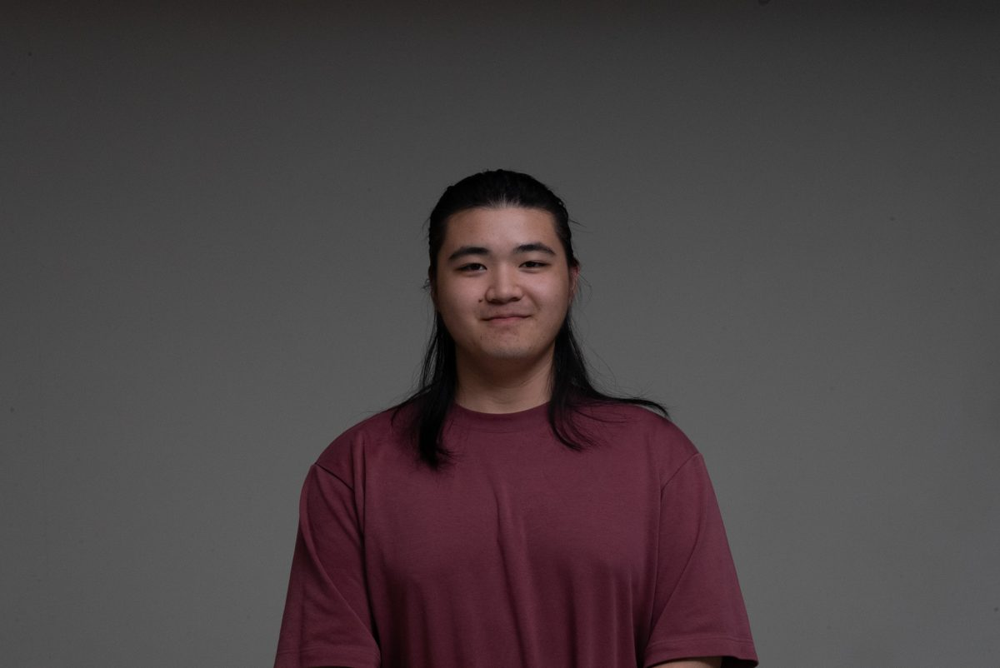

I'm an Industrial Designer passionate about creating intuitive, human-centered products that seamlessly integrate into people's lives.
Recently completed my BFA in Industrial Design at Rhode Island School of Design, I specialize in physical computing, model-making, and ergonomic design. My approach combines user research, visual storytelling, and hands-on prototyping to deliver solutions that are both functional and aesthetically compelling.
I've had the opportunity to work with companies like TEAMS Design in Chicago, Luxoft on BMW's in-vehicle UI/UX, and BSH Home Appliances, where I've honed my skills in concept development, 3D modeling, and design analysis.
When I'm not designing, you can find me cooking and collecting functional kitchenware, or on the badminton court with Brown University's Varsity team. I believe in continuous learning and staying curious about how design can improve everyday experiences.
Design Intern
TEAMS Design, Chicago, IL
UI/UX Design Intern
Luxoft Holding, Inc., Shanghai
Design Intern
BSH Home Appliances, Nanjing
Design Assistant
HuaYouDe Design Co., Nanjing
CAD Lab Monitor
Rhode Island School of Design
Wood Shop Monitor
Rhode Island School of Design
BFA, Industrial Design
Rhode Island School of Design
Focus: Physical Computing, Woodworking, Model-making
Design Interest: User Integration, Visual Language, Intuitive Design
Design & Software
Rhino 3D - Solidworks - Adobe Suite - Keyshot - AutoCAD - CNC Machining - Cast Iron - Prototyping (foam, wood, 3D printing) - Ergonomic Design
Other
User Research - Benchmarking & Analysis - Visual Storytelling - Client Presentations - Physical Computing
Language
Mandarin - English